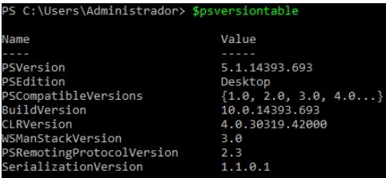
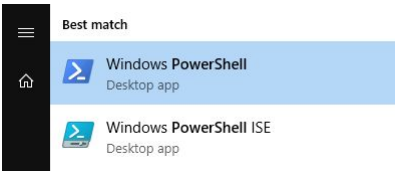
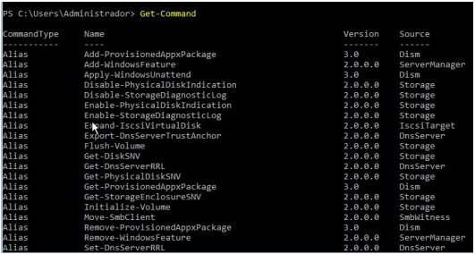
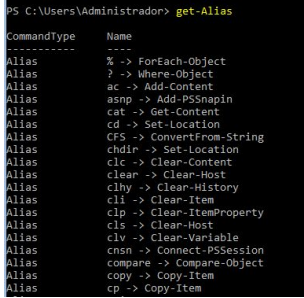
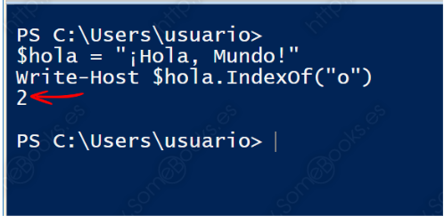
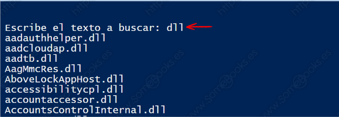
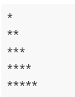
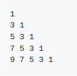

UT6. PowerShell
Programación de Aula¶
Resultados de Aprendizaje¶
Esta unidad cubre el Resultado de aprendizaje 7 (RA7) según el Real Decreto 1629/2009, de 30 de octubre, el cual es:
- Utiliza lenguajes de guiones en sistemas operativos, describiendo su aplicación y administrando servicios del sistema operativo.
Los criterios de evaluación asociados son:
a. Se han utilizado y combinado las estructuras del lenguaje para crear guiones.
b. Se han utilizado herramientas para depurar errores sintácticos y de ejecución.
c. Se han implantado guiones en sistemas libres y propietario.
d. Se han realizado cambios y adaptaciones de guiones del sistema.
e. Se han implantado guiones en sistemas libres y propietarios
f. Se han consultado y utilizado librerías de funciones.
g. Se han documentado los guiones creados.
Planificación Temporal (6 sesiones / 12 horas)¶
| Sesión | Contenido |
|---|---|
| 1 | Introducción PowerShell, Creación Primer Script, Comentarios y depuración. |
| 2 | Comandos básicos, Variables, Tipos de Datos y Operaciones Básicas |
| 3 | Estructuras condicionales |
| 4 | Estructuras repetitivas |
| 5 | Importación de datos y funciones |
| 6 | Refuerzo y Ampliación |
1. Introducción¶
1.1 ¿Qué es PowerShell?¶
PowerShell es un intérprete de línea de comandos orientado a objetos de Microsoft. Fue diseñado para su uso por parte de administradores, con el propósito de automatizar tareas o realizarlas de forma más controlada. Se incluye por defecto desde WS 2008 R2 y Windows 7.
Información
Las órdenes incluidas en Powershell son muchas y reciben el nombre de cmdlets . Un cmdlet se nombra siempre mediante el siguiente formato: Verbo-Sustantivo
PowerShell se ejecuta en Windows, Linux y MacOS.
1.2 Versiones de PowerShell¶
A partir de la versión 6, PowerShell se puede instalar en varios sistemas operativos. A esta versión se la conoce como PowerShell Core. A continuación, se muestran las diferentes versiones de PowerShell:
| Versión | Fecha de lanzamiento | Descripción |
|---|---|---|
| PowerShell 7.2 | Noviembre de 2024 | Compilado en .NET 6.0 |
| PowerShell 7.1 | Noviembre de 2020 | Compilado en .NET 5.0 |
| PowerShell 7.0 | Marzo de 2020 | Compilado en .NET Core 3.1 |
| PowerShell 6.2 | Marzo de 2019 | |
| PowerShell 6.1 | Septiembre de 2018 | Compilado en .NET Core 2.1 |
| PowerShell 6.0 | Enero de 2018 | Primera versión compilada en .NET Core 2.0 . Instalable en Windows, MacOS y Linux. |
| Windows PowerShell 5.1 | Agosto de 2016 | Publicado en Windows 10 Anniversary Update y Windows Server 2016, WMF 5.1 |
| Windows PowerShell 5.0 | Febrero de 2016 | Publicado en Windows Management Framework [WMF] 5.0 |
| Windows PowerShell 4.0 | Octubre de 2013 | Integrado en Windows 8.1 y con Windows Server 2012 R2, WMF 4.0 |
| Windows PowerShell 3.0 | Octubre de 2012 | Integrado en Windows 8 y con Windows Server 2012, WMF 3.0 |
| Windows PowerShell 2.0 | Julio de 2009 | Integrado en Windows 7 y Windows Server 2008 R2 |
| Windows PowerShell 1.0 | Noviembre de 2006 | Componente opcional en Windows Server 2008 |
Para obtener la versión de PowerShell instalada:

1.3 Ejecución de PowerShell¶
En Windows tenemos dos opciones a la hora de ejecutar PowerShell:
- Entorno gráfico: PowerShell ISE (del inglés, Integrated Scripting Environment).
- Entorno comando: Windows Powershell

En Linux tenemos varios métodos para instalar PowerShell.
Instalación de PowerShell en Ubuntu:
Accedemos al respositorio oficial de PowerShell https://github.com/PowerShell y nos descargamos el paquete .deb para la versión de Ubuntu que tenemos instalada en nuestro PC.
Una vez instalado, para abrir PowerShell tecleamos en el terminal:
1.4 Execution Policies¶
La política de ejecución (execution policy) de PowerShell es una característica de seguridad destinada a controlar las condiciones bajo las cuales PowerShell carga los archivos de configuración y ejecuta scripts. Esta característica ayuda a controlar la ejecución de scripts maliciosos.
Tenemos las siguientes políticas de ejecución:
Unrestricted: Es la política menos restrictiva. Los usuarios pueden ejecutar todos los scripts.
Bypass: Al igual que unrestricted, esta política de ejecución no bloquea nada.
Undefined: PowerShell elimina cualquier política de ejecución asignada.
RemoteSigned: Esta política, establece que todos los scripts remotos deben estar firmados.
AllSigned: Todos los scripts deben esta firmados.
Restricted: Es la polícita más restrictiva. Si se establece esta polícita no se puede ejecutar ningún script.
Para consultar la política de ejecución configurada ejecutamos el siguiente comando:
Si deseamos consultar todas las políticas de ejecución disponibles:
Por razones de seguridad, PowerShell está configurado de forma predeterminada para permitir solo la ejecución de scripts firmados. La ejecución del siguiente comando le permitirá ejecutar scripts sin firmar (debe ejecutar PowerShell como administrador para hacer esto)
1.5 Creación de mi Primer Script¶
Vamos a crear nuestro primer script, y como en todos los lenguajes de programación el primero programa siempre es un "Hola mundo", pues ese será también nuestro primer script.
Para comenzar a crear nuestros script utilizaremos el IDE llamado PowerShell ISE
Cuando entremos al ISE daremos clic en el botón de Nuevo, que se encuentra en la esquina superior izquierda.

En la parte de la derecha, encontramos una lista de comandos disponibles y un poco de ayuda con ellos, una vez abierto el documento para el script procedemos a mostrar en pantalla nuestro "Hola Mundo"
Write-Host "Hola Mundo"

1.6 Comentarios¶
Los comentarios en PowerShell se escriben utilizando el símbolo de almohadilla (#).
▸ Comentar una línea.
▸ Comentar un bloque
1.7 Depuración¶
PowerShell es un potente lenguaje de scripting que puede automatizar tareas y administrar sistemas. Sin embargo, escribir y ejecutar scripts de PowerShell también puede introducir errores y errores que deben corregirse. La depuración es el proceso de buscar y resolver estos problemas en el código. A continuación se describe como depurar scripts en un equipo local mediante Windows PowerShell ISE.
-
Tipos de puntos de interrupción (breakpoint)¶
Un punto de interrupción es una zona designada en un script que desee que la operación entre en pausa para poder examinar el estado actual de las variables y el entorno en que se ejecuta el script.
Puede establecer tres tipos de puntos de interrupción en el entorno de depuración de Windows PowerShell:
-
Punto de interrupción de línea. El script se pausa cuando se alcanza la línea designada durante la operación del script.
-
Variable breakpoint. El script se pausa cuando cambia el valor de la variable designada.
-
Command breakpoint. El script se pausa cada vez que el comando designado está a punto de ejecutarse durante la operación del script. Puede incluir parámetros para filtrar aún más el punto de interrupción solo para operación deseada. El comando también puede ser una función que ha creado.
En el entorno de depuración Windows PowerShell ISE, solo se pueden establecer puntos de interrupción de línea usando el menú o los métodos abreviados de teclado. Los otros dos tipos de puntos de interrupción se pueden establecer, pero debe hacerse desde el panel de consola mediante el cmdlet Set-PSBreakpoint.
-
Establecer un punto de interrupción.¶
Solo se puede establecer un punto de interrupción en un script después de guardarlo. Haga clic con el botón derecho en la línea donde desee establecer un punto de interrupción y después haga clic en Alternar punto de interrupción. O bien, haga clic en la línea donde desee establecer un punto de interrupción y presione F9 o, en el menú Depurar, haga clic en Alternar punto de interrupción.
El script siguiente es un ejemplo de cómo establecer un punto de interrupción de variable desde el panel de consola mediante el cmdlet Set-PSBreakpoint.
# This command sets a breakpoint on the Server variable in the Sample.ps1 script.
Set-PSBreakpoint -Script sample.ps1 -Variable Server
-
Enumerar todos los puntos de interrupción¶
Muestra todos los puntos de interrupción de la sesión actual de Windows PowerShell.
En el menú Depurar, haga clic en Mostrar puntos de interrupción. El script siguiente es un ejemplo de cómo enumerar todos los puntos de interrupción desde el panel de consola mediante el cmdlet Get-PSBreakpoint.
-
Quitar un punto de interrupción.¶
Al quitar un punto de interrupción, este se elimina. Haga clic con el botón derecho en la línea donde desee quitar un punto de interrupción y después haga clic en ToggleBreakpoint. O bien, haga clic en la línea donde desee quitar un punto de interrupción y, en el menú Depurar, haga clic en Alternar punto de interrupción.
-
Quitar todos los puntos de interrupción¶
Para quitar todos los puntos de interrupción definidos en la sesión actual, en el menú Depurar, haga clic en Quitar todos los puntos de interrupción.
El script siguiente es un ejemplo de cómo quitar todos los puntos de interrupción del panel de consola mediante el cmdlet Remove-PSBreakpoint.
# This command deletes all of the breakpoints in the current session.
Get-PSBreakpoint | Remove-PSBreakpoint
-
Deshabilitar todos los puntos de interrupción¶
Al deshabilitar un punto de interrupción, este no se quita; permanece desactivado hasta que se vuelve a habilitar. Para deshabilitar todos los puntos de interrupción de la sesión actual, en el menú Depurar, haga clic en Deshabilitar todos los puntos de interrupción. El script siguiente es un ejemplo de cómo deshabilitar todos los puntos de interrupción desde el panel de consola mediante el cmdlet Disable-PSBreakpoint.
# This command disables all breakpoints in the current session.
# You can abbreviate this command as: "gbp | dbp".
Get-PSBreakpoint | Disable-PSBreakpoint
-
Habilitar un punto de interrupción¶
Para habilitar un punto de interrupción específico, haga clic con el botón derecho en la línea donde desee habilitar un punto de interrupción y después haga clic en Habilitar punto de interrupción. O bien, haga clic en la línea donde desee habilitar un punto de interrupción y presione F9 o, en el menú Depurar, haga clic en Habilitar punto de interrupción. El script siguiente es un ejemplo de cómo habilitar puntos de interrupción desde el panel de consola mediante el cmdlet Enable-PSBreakpoint.
-
Habilitar todos los puntos de interrupción¶
Para habilitar todos los puntos de interrupción definidos en la sesión actual, en el menú Depurar, haga clic en Habilitar todos los puntos de interrupción. El script siguiente es un ejemplo de cómo habilitar todos los puntos de interrupción desde el panel de consola mediante el cmdlet Enable-PSBreakpoint.
# This command enables all breakpoints in the current session.
# You can abbreviate the command by using their aliases: "gbp | ebp".
Get-PSBreakpoint | Enable-PSBreakpoint
-
¿Cómo administrar una sesión de depuración?¶
Antes de iniciar la depuración, debe establecer uno o varios puntos de interrupción. No se puede establecer un punto de interrupción si no se guarda el script que desea depurar. Después de iniciar la depuración, no se puede editar un script hasta que la depuración se detenga. Un script con uno o más puntos de interrupción establecidos se guarda automáticamente antes de ejecutarse.
-
Iniciar la depuración
Presione F5 o haga clic en el icono Ejecutar script en la barra de herramientas, o bien, en el menú Depurar, haga clic en Ejecutar o continuar. El script se ejecuta hasta que encuentra el primer punto de interrupción. Detiene la operación en este punto y resalta la línea en la que se produce la pausa.
-
Continuar la depuración
Presione F5 o haga clic en el icono Ejecutar Script en la barra de herramientas, o bien, en el menú Depurar, haga clic en Ejecutar o continuar. También puede escribir
Cen el panel de consola y presionar ENTRAR. Esto hace que el script se siga ejecutando hasta el punto de interrupción siguiente o hasta el final si no se encuentran más puntos de interrupción. -
Ver la pila de llamadas
La pila de llamadas muestra la ubicación de ejecución actual en el script. Si el script se ejecuta en una función que llamó una función diferente, se representa mediante filas adicionales en la salida. La última fila muestra el script original y la línea en la que se llamó a una función. La siguiente línea muestra esa función y la línea en la que se podría haber llamado a otra función. La primera fila muestra el contexto actual de la línea actual en la que se estableció el punto de interrupción.
Mientras está en pausa, para ver la pila de llamadas actual, presione CTRL+MAYÚS+D o, en el menú Depurar, haga clic en Mostrar pila de llamadas. También puede escribir
Ken el panel de consola y presionar ENTRAR. -
Detener la depuración
Presione MAYÚS+F5 o, en el menú Depurar, haga clic en Detener el depurador. También puede escribir Q en el panel de consola y presionar ENTRAR.
1.8 Ejercicios¶
Práctica 1¶
Tarea
Ejercicio 1 . Ejecuta Windows PowerShell en Windows 2019 Server el cmdlet adecuado para visualizar la política de ejecución de scripts actual y cambia las políticas de ejecución de scripts (execution policy) para que se pueda ejecutar cualquier script en PowerShell. Ejecuta el cmdlet correspondiente para mostrar la versión instalada en el sistema.
Tarea
Ejercicio 2. Realiza una instalación de PowerShell Core en un contenedor Docker o una máquina virtual con Ubuntu . Ejecuta el cmdlet necesario para mostrar la versión de PowerShell instalada. [Instalacion Powershell Linux] (https://learn.microsoft.com/ca-es/powershell/scripting/install/install-ubuntu?view=powershell-7.4) Se obtendrá mejor puntuación en el ejercicio si se realiza la instalación en un contenedor Docker. Tip: Docker cheat sheet
2. Comandos básicos¶
A continuación, abordaremos los comandos básicos de PowerShell
-
Get-Command : Muestra todos los comandos disponibles
-
Clear-Host : Limpia la pantalla

2.1 Comandos básicos. Alias¶
Información
Un alias es un nombre alternativo o sobrenombre para un cmdlet o un elemento de un comando, como una funcion, un script, un archivo o un archivo ejecutable.
Podemos utilizar el alias en lugar de el nombre completo del cmdlet. Por ejemplo, podemos utilizar los comandos “dir” o “ls” y muchos más. Estos no son mas que alias definidos a otros comandos de Powershell
- Get-Alias : Nos devuelve un listado con todos los alias definidos en el sistema

- Get-Help \
: Muestra ayuda del comando indicado

- Get-Help \
-examples: Muestra ayuda del comando indicado, mostrando ejemplos.

2.3 Comandos de fecha y hora¶
El comando Get-Date nos permite recuperar la fecha y hora actuales.

Si deseamos obtener solo la fecha o la hora usaremos el parámetro -DisplayHint


Podemos asignar a una variable el resultado del comando Get-Date para almacenar la fecha, hora.
2.4. Comandos de archivos y carpetas¶
Ruta del directorio actual
El cmdlet Get-Location (gl,pwd) se utiliza para obtener la ruta del directorio actual en el que se está trabajando
Navegar entre directorios
El cmdlet Set-Location(sl, cd) establece la ubicación de trabajo en una ubicación especificada. Esa ubicación puede ser un directorio, subdirectorio, una ubicación del registro o cualquier ruta de acceso del proveedor.
Listar archivos en una carpeta
El cmdlet Get-ChildItem (gci, ls,dir) ** en PowerShell se utiliza para obtener una lista de los elementos que se encuentran en el directorio actual**, incluyendo archivos y subdirectorios.
Puedes usarlo para buscar archivos o carpetas específicos y para explorar el contenido del directorio actual.
Copiar archivos y carpetas
El cmdlet Copy-Item (copy, cp, cpi) nos permite copiar archivos o carpetas. Ejemplo: Copia todos los archivos de la carpeta scripts de la unidad E: a la carpeta Users/Scripts de la unidad C:
Crear una nueva carpeta o archivo
El cmdlet New-Item (ni) nos permite crear un nuevo archivo o carpeta
Ejemplo: Crea la carpeta scripts en la unidad C:
Ejemplo: Crea el archivo ejemplo1.ps1 en la carpeta scripts
Borrar un archivo o carpeta
El cmdlet Remove-Item (del, erase, rm, ri, rmdir) nos permite borrar un archivo o carpeta.
Ejemplo: Borra el archivo prueba1.ps1
Ejemplo: Borra todos los archivos de la carpeta scripts
Mover un archivo o carpeta
El cmdlet Move-Item (mi, move, mv) nos permite mover un archivo de una ubicación a otra.
Ejemplo: Mueve el archivo fichero1.txt a la ruta indicada
Renombrar un archivo o carpeta
El cmdlet Rename-Item nos permite cambiar el nombre de archivos y carpetas
Ejemplo: Cambia el nombre de script1 a script2
Muestra el contenido de un archivo
El cmdlet Get-Content nos permite mostrar el contenido de un archivo.
Ejemplo:
Verificar la existencia de un archivo o carpeta
Uno de los principales usos de Test-Path es verificar la existencia de un archivo o carpeta. Si obtenemos el valor true existe, en caso contrario devuelve el valor false
Ejemplo 1: Devuelve true si script1.ps1 existe
Ejemplo 2: Devuelve true si $elem existe y es un directorio
3. Variables y tipos de datos¶
Información
Una variable es una porción de memoria principal a la que ponemos un nombre que facilite su identificación y manejo.
Su objetivo consiste en permitir el almacenamiento de un valor en particular para su uso posterior a lo largo del script. Comienzan con el carácter $. Los nombres de variable en PowerShell no distinguen **mayúsculas de minúsculas ** .
Definición Implícita
Definición Explícita
- Get-Variable : Devuelve un listado completo de las variables que se han definido

3.2 Variables predefinidas¶
Windows Powershell dispone de muchas variables predefinidas también llamadas “variables integradas” o “variables internas“.
| $true | Valor true. |
|---|---|
| $false | Valor false. |
| $home | El directorio home del usuario actual. |
| $host | Información de instalación del host. |
| $error | Lista de los errores que han ocurrido desde que se ha iniciado WPS. |
PowerShell puede acceder a las variables de entorno. Estas variables se exponen a través de una unidad denominada env:.
- Muestra todas las variables de entorno
- Muestra el usuario del sistema
- Muestra el nombre del equipo
3.3 Tipos de datos básicos¶

3.4 Comando para obtener el tipo de datos de una variable¶

Tarea
Pregunta: ¿Qué tipo de dato almacena la variable $a=8.5?
- [ ] Int
- [ ] Long
- [ ] Double
- [ ] String
Ver más
Ver la respuesta correcta
El tipo de dato almacenado es double
3.5 Definición de variables¶
Podemos definir explícitamente el tipo de datos de una variable o asignarle un valor y automáticamente se le asignará el tipo de datos correspondiente.
es equivalente a
4 Operaciones básicas en Powershell¶
4.1 Entrada y salida de información¶
- Read-Host . Guarda en una variable lo que escriba el usuario, **pero como texto **
Pedir información al usuario

- Write-Host .Muestra en pantalla un texto o el contenido de una variable.
Mostrar información al usuario

Atención
Read-Host siempre almacena las variables como String (cadena de texto). Esto puede ocasionar problemas cuando estamos intentando almacenar un número.
Para forzar a que sea un entero:
4.2 Operadores aritméticos¶
| Operador | Función | Ejemplo |
|---|---|---|
| + | Suma | $resultado = $x + 3 |
| - | Resta | $resultado = $x - 3 |
| * | Multiplicación | $resultado = $x * 3 |
| / | División | $resultado = $x / 3 |
| % | Resto | $resultado = $x % 3 |
Operadores aritméticos especiales
| Operador | Significado | Ejemplo | Equivalencia |
|---|---|---|---|
| += | Incrementa el valor de la variable | $x+=3 | $x = $x + 3 |
| -= | Reduce el valor de la variable | $x-=3 | $x = $x - 3 |
| *= | Multiplica el valor de la variable | $x*=3 | $x = $x * 3 |
| /= | Divide el valor de la variable | $x/=3 | $x = $x / 3 |
4.3 Operadores de comparación¶
| Operador | Significado | Ejemplo ($true) |
|---|---|---|
| -eq | Igual | 1 -eq 1 |
| -ieq | Igual Con valores de tipo texto, no tendrá en cuenta la diferencia entre mayúsculas y minúsculas. |
"Hola" -ieq "HOLA" |
| -ceq | Igual Con valores de tipo texto, tendrá en cuenta la diferencia entre mayúsculas y minúsculas. |
"HOLA" -ceq "HOLA" |
| -ne | Diferente | 3 -ne 5 |
| -lt | Menor | 3 -lt 5 |
| -le | Menor o igual | 5 -le 5 3 -le 5 |
| -gt | Mayor | 5 -gt 3 |
| -ge | Mayor o igual | 5 -ge 5 5 -ge 3 |
| -like | Es como | "Fermín" -like "Fer*" |
| -notlike | No es como | "Fermín" -notlike "Fa*" |
| -contains | Contiene | 9,5,2 -contains 5 |
| -notcontains | No contiene | 9,5,2 -notcontains 1 |
4.4 Operadores lógicos¶
| Operador | Significado | Ejemplo |
|---|---|---|
| -and | AND lógico. TRUE cuando las dos expresiones son ciertas | (1 -eq 1) -and (1 -eq 2) False |
| -or | OR lógico. TRUE cuando alguna expresión es cierta | (1 -eq 1) -or (1 -eq 2) True |
| -xor | OR exclusivo. TRUE cuando sólo una expresión es cierta | (1 -eq 1) -xor (2 -eq 2) False |
| -not | Negación lógica. Niega la expresión | -not (1 -eq 1) False |
| ! | Idéntico a -not | !(1 -eq 1) False |
4.5 Operaciones con cadenas¶
- Una de las operaciones más habituales es la concatenación (+), que nos permite unir dos o más variables.
- El método IndexOf nos permite buscar un determinado texto.

4.6 Ejercicios¶
Práctica 2¶
Tarea
Ejercicio 1. Crea un script en lenguaje PowerShell que muestre al usuario los siguientes mensajes:
- Hola nombre de usuario
- Tu directorio de trabajo es directorio
- Perteneces al dominio Nombre_dominio
- Tu equipo se llama Nombre_equipo.
Tarea
Ejercicio2. Crea un script en PowerShell que pida dos números al usuario e imprima por pantalla su suma, la resta, la multiplicación, división y resto.
Tarea
Ejercicio3. Crea un script en PowerShell que pregunte al usuario por el número de horas trabajadas y el coste por hora. Después debe mostrar por pantalla el salario que debemos pagarle.
5. Estructuras condicionales¶
Uso de la orden If, Else, ElseIf¶
-
Condición se refiere a una expresión lógica. Es decir, que al evaluarla se obtendrá un valor $true o $false.
-
El bloque de código será un conjunto de instrucciones que sólo se ejecutarán cuando la condición ofrezca el valor $true.
Bloque If
Bloque if-else
If ($x -gt 50){
Write-Host "La variable x es mayor que 50"
}Else {
Write-Host "La variable es menor o igual que 50"
}
Bloque if-ElseIf
If ($x -gt 50){
Write-Host "La variable x es mayor que 50"
}ElseIf ($x -eq 50) {
Write-Host "La variable x es igual a 50"
}Else {
Write_host "La variable es es menor que 50"
}
Uso de la orden switch¶
La instrucción switch permite organizar bloques de código de forma que se ejecutan cuando se cumpla la condición.
switch(valor de prueba) {
Patron 1 {Bloque de codigo 1}
Patron 2 {Bloque de codigo 2}
Patron n {Bloque de codigo n}
default {Bloque por defecto}
}
[Int]$x = Read-Host "Introduce un valor"
#Bloque Switch
switch ($x) {
1 {
#Bloque de instrucciones cuando $x es igual a 1
Write-Host "Has introducido el valor 1"
}
2 {
#Bloque de instrucciones cuando $x es igual a 2
Write-Host "Has introducido el valor 2"
}
3 {
#Bloque de instrucciones cuando $x es igual a 3
Write-Host "Has introducido el valor 3"
}
default {
#Cualquier otro valor
Write-Host "Has introducido cualquier otro valor"
}
}
Ejemplo 2:
[int]$nota = Read-Host "Escribe una nota"
switch ($nota) {
{$_ -lt 5} {Write-Host "Suspenso"}
{($_ -ge 5) -and ($_ -le 10)} {Write-Host "Aprobado"}
{$_ -in 1..4} {Write-Host "Insuficiente"}
5 {Write-Host "Suficiente"}
6 {Write-Host "Bien"}
{$_ -in 7,8} {Write-Host "Notable"}
{$_ -in 9,10} {Write-Host "Sobresaliente"}
default {Write-Host "No conozco esa nota"}
}
Ejercicios¶
Práctica 3¶
Tarea
Ejercicio 1. Crea un script que solicite un número al usuario. El programa debe indicar si el número es impar o par.
Tarea
Ejercicio2. Escribir un programa que pregunte al usuario su edad y muestre por pantalla si es mayor de edad o no.
Tarea
Ejercicio 3. Crea un script en el que se pida dos números enteros al usuario. El script debe indicar si el primer número es mayor, menor o igual que el otro.
Tarea
Ejercicio 4. Crea una calculadora muy sencilla, en la que se preguntará al usuario dos números y que operación desea realizar.
Ejemplo:
** CALCULADORA ******
- Sumar
- Restar
- Multiplicar
- Dividir
¿Qué desea hacer?Elige una opción:
Tarea
Ejercicio 5. Crea un script en el que pidas un fichero o carpeta por teclado y te diga si existe o no.
Tarea
Ejercicio 6. Crea un script que diga si lo que se pasa por teclado es un directorio. En ese caso sacará una lista con los archivos que contiene y subdirectorios. Debes utilizar el parámetro Recurse.
Tarea
Ejercicio 7. Escribir un programa que almacene la cadena de caracteres contraseña en una variable, pregunte al usuario por la contraseña e imprima por pantalla si la contraseña introducida por el usuario coincide con la guardada en la variable sin tener en cuenta mayúsculas y minúsculas.
Tarea
Ejercicio 8. Los alumnos de un curso se han dividido en dos grupos A y B de acuerdo al sexo y el nombre. El grupo A esta formado por las mujeres con un nombre anterior a la M y los hombres con un nombre posterior a la N y el grupo B por el resto. Escribir un programa que pregunte al usuario su nombre y sexo, y muestre por pantalla el grupo que le corresponde.
Tarea
Ejercicio 9. Los tramos impositivos para la declaración de la renta en un determinado país son los siguientes:
| Renta | Tipo Impositivo |
|---|---|
| Menos de 10000€ | 5% |
| Entre 10000€ y 20000€ | 15% |
| Entre 20000€ y 35000€ | 20% |
| Entre 35000€ y 60000€ | 30% |
| Más de 60000€ | 45% |
Escribir un programa que pregunte al usuario su renta anual y muestre por pantalla el tipo impositivo que le corresponde.
Tarea
Ejercicio 10. En una determinada empresa, sus empleados son evaluados al final de cada año. Los puntos que pueden obtener en la evaluación comienzan en 0.0 y pueden ir aumentando, traduciéndose en mejores beneficios. Los puntos que pueden conseguir los empleados pueden ser 0.0, 0.4, 0.6 o más, pero no valores intermedios entre las cifras mencionadas. A continuación se muestra una tabla con los niveles correspondientes a cada puntuación. La cantidad de dinero conseguida en cada nivel es de 2.400€ multiplicada por la puntuación del nivel.
| Nivel | Puntuación |
|---|---|
| Inaceptable | 0.0 |
| Aceptable | 0.4 |
| Meritorio | 0.6 o más |
Escribir un programa que lea la puntuación del usuario e indique su nivel de rendimiento, así como la cantidad de dinero que recibirá el usuario.
Tarea
Ejercicio 11. Escribir un programa para una empresa que tiene salas de juegos para todas las edades y quiere calcular de forma automática el precio que debe cobrar a sus clientes por entrar. El programa debe preguntar al usuario la edad del cliente y mostrar el precio de la entrada. Si el cliente es menor de 4 años puede entrar gratis, si tiene entre 4 y 18 años debe pagar 5€ y si es mayor de 18 años, 10€.
Tarea
Ejercicio 12. La pizzería Bella Napoli ofrece pizzas vegetarianas y no vegetarianas a sus clientes. Los ingredientes para cada tipo de pizza aparecen a continuación.
- Ingredientes vegetarianos: Pimiento y tofu.
- Ingredientes no vegetarianos: Peperoni, Jamón y Salmón. Escribir un programa que pregunte al usuario si quiere una pizza vegetariana o no, y en función de su respuesta le muestre un menú con los ingredientes disponibles para que elija. Solo se puede eligir un ingrediente además de la mozzarella y el tomate que están en todas la pizzas. Al final se debe mostrar por pantalla si la pizza elegida es vegetariana o no y todos los ingredientes que lleva.
Los enunciados de estos ejercicos están extraidos de la siguiente página web:
https://aprendeconalf.es/docencia/python/ejercicios/condicionales/
6. Estructuras repetitivas¶
Todos los lenguajes de programación necesitan un método que les permita repetir un bloque de instrucciones. En PowerShell puedes utilizar:
-
do while: repite mientras la condición vale $true
-
while: repite mientras la condición vale $true
-
do until: repite hasta que la condición vale $true
-
for: repite durante un nº de veces
-
foreach: repite una vez para cada elemento de la lista
6.1 La estructura do while¶
Ejemplo: Resultado por pantalla: 1 2 3 4 56.2 La estructura while¶
Ejemplo:
Resultado por pantalla:
1 2 3 4 5
6.3 La estructura do until¶
Ejemplo:
Resultado por pantalla:
1 2 3 4 5
6.4 La estructura for¶
Ejemplo:
Resultado por pantalla:
1 2 3 4 5
6.5 La estructura foreach¶
La estructura foreach funciona en cualquier situación donde pueda obtenerse una lista de elementos.
Ejemplo:
Resultado por pantalla:
1 2 3 4 5
Ejemplo:
$ruta = "C:\Windows\System32"
$texto = Read-Host "Escribe el texto a buscar"
foreach ($archivo in Get-ChildItem $ruta) {
if($archivo.Name.IndexOf($texto) -ge 0) {
Write-Host $archivo.Name
}
}

6.6 Ejercicios¶
Práctica 4¶
Tarea
Ejercicio1. Escribir un programa que pregunte el nombre del usuario en la consola y un número entero e imprima por pantalla en líneas distintas el nombre del usuario tantas veces como el número introducido.
Tarea
Ejercicio 2. Escribir un programa que pregunte al usuario su edad y muestre por pantalla todos los años que ha cumplido (desde 1 hasta su edad).
Tarea
Ejercicio3. Escribir un programa que pida al usuario un número entero positivo y muestre por pantalla la cuenta atrás desde ese número hasta cero separados por comas.
Tarea
Ejercicio4 Escribir un programa que pida al usuario un número entero positivo y muestre por pantalla todos los números impares desde 1 hasta ese número separados por comas.
Tarea
Ejercicio 5. Crea un script que utilice for para mostrar la tabla de multiplicar de un número que se solicita al usuario.
Tarea
Ejercicio 6. Crea un script en lenguaje PowerShell que sea un juego de adivinar un número de 0 a 100. El número se pondrá fijo al principio del procedimiento. Se irá preguntando al usuario números y se dirá si es mayor o menor en caso de no adivinar el numero. Al adivinar el número mostrará un mensaje de enhorabuena y se detendrá el juego.
Tarea
Ejercicio 7 Escribir un programa que pida al usuario un número entero y muestre por pantalla un triángulo rectángulo como el de más abajo, de altura el número introducido.

Tarea
Ejercicio 8 Escribir un programa que pida al usuario un número entero y muestre por pantalla un triángulo rectángulo como el de más abajo.

Tarea
Ejercicio 9 Escribir un programa que almacene la cadena de caracteres contraseña en una variable, pregunte al usuario por la contraseña hasta que introduzca la contraseña correcta.
Tarea
Ejercicio 10. Crea un script que muestre un menú con las siguientes opciones:
a) Crear una carpeta
b) Crear un fichero nuevo
c) Cambiar el nombre de un fichero o carpeta
d) Borrar un archivo o carpeta
e) Verificar si existe un fichero o carpeta
f) Mostrar el contenido de un directorio.
g) Mostar la fecha y hora actuales
x) Salir
El menú se mostrará hasta que el usuario seleccione la opción Salir. Todos los datos que necesite el usuario se pedirán por teclado al usuario.
7 Importación de datos¶
- Importación de un archivo de texto
Para importar los datos de un fichero .txt usaremos el comando Get-Content para almacenar los datos en una variable.

Importación de un archivo CSV
Para importar los datos de un fichero csv usaremos el método Import-CSV para almacenar los datos en una variable.
$ordenadores = import-CSV computers.csv
foreach($pc in $ordenadores) {
Write-Host "Equipo: $($pc.Nombre) $($pc.IP) $($pc.Oficina)"
}


Import-CSV: con powershell podemos importar cualquier archivo CSV. Por defecto el delimitador es la coma, pero se puede indicar otro.La cabecera del archivo pasan a ser los nombres de las propiedades pero también se pueden indicar otros.

{kind=link}
$empleados = Import-Csv C:\scripts\empleados.csv -Delimiter ";"
foreach ($em in $empleados)
{
Write-Host "Usuario: $($em.nombre) $($em.apellido)"
}
8. Funciones¶
Una función no es más que un conjunto de instrucciones a las que le damos un nombre.
Las funciones tienen varias ventajas en la programación:
- Reutilización de código: Puedes definir una función una vez y luego llamarla en múltiples partes de tu programa. Esto evita la necesidad de repetir el mismo código una y otra vez.
- Modularidad: Las funciones permiten dividir un programa grande y complejo en partes más pequeñas y manejables. Cada función se encarga de una tarea específica, lo que facilita la comprensión y mantenimiento del código.
- Abstracción: Una función te permite encapsular un conjunto de operaciones en un nombre significativo. Esto hace que el código sea más legible y fácil de entender.
- Facilita la depuración: Al dividir un programa en funciones más pequeñas, es más fácil identificar y corregir errores o fallos en el código.
- Permite la organización: Al utilizar funciones, puedes organizar tu código de manera lógica y estructurada, lo que facilita su comprensión y mantenimiento.
- Mejora la colaboración: Al trabajar en equipo, las funciones permiten a diferentes programadores trabajar en diferentes partes del código al mismo tiempo sin interferir con el trabajo de los demás.
Sintaxis
Ejemplo 1
En PowerShell, hay dos formas de definir parámetros en una función:
- Usando la palabra clave
param:
- Especificando los parámetros directamente en la definición de la función:
Para usar esta función, simplemente llama a Sumar y proporciona los valores para $x y $y. Por ejemplo:
Ambas formas son correctas y válidas en PowerShell. Sin embargo, la primera opción (param) proporciona una mayor claridad en cuanto a la declaración de los tipos de datos esperados para cada parámetro. Esto puede hacer que tu código sea más legible y menos propenso a errores si los tipos de datos incorrectos se pasan a la función.
Ejemplo 2
function TestPing($Address) {
$Result=Test-Connection -ComputerName $Address -ErrorAction SilentlyContinue
if ($? -eq $true) {
write-output "ICMP Test to ${Address}: OK"
}else{
write-output "ICMP Test to ${Address}: Error"
}
}
En nuestro ejemplo, creamos una función denominada TestPing para probar la conectividad a una dirección variable.
Para utilizar la función, debemos realizar la llamada:
Ejercicios¶
Práctica 5¶
En esta práctica vas a reescribir algunos de los scripts realizados anteriormente, pero haciendo uso de las funciones.
Tarea
Ejercicio 1 Crea una calculadora muy sencilla, en la que se preguntará al usuario dos números y que operación desea realizar.
Ejemplo:
** CALCULADORA ******
- Sumar
- Restar
- Multiplicar
- Dividir
- Salir
¿Qué desea hacer?Elige una opción:
Debes crear las funciones Sumar, Restar, Multiplicar y Dividir. Cada una de estas funciones tendrá dos parámetros.
Tarea
Ejercicio 2 Haciendo uso de la estructura repetitiva foreach, debes leer todos los datos del archivo usuarios.csv e imprimir el nombre, apellidos y grupo del usuario